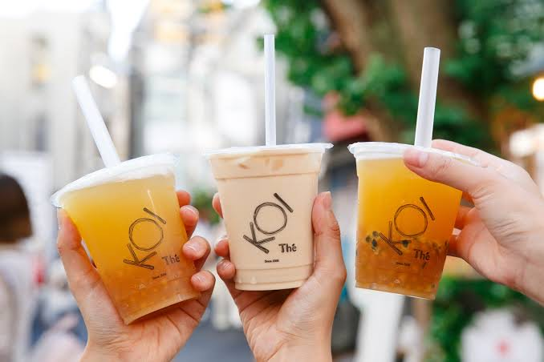
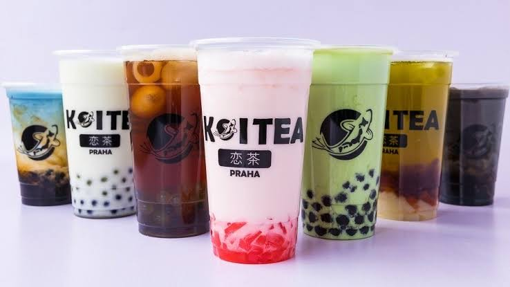

Welcome to Koi The
 
In each and every KOI store, we are keen to share our happiness and love of tea with you. We do our best every day to make your experience memorable. Hear the sound of tea being brewed, of ice being crushed, and of laughter. Smell the aroma of our freshly prepared ingredients. Be excited by the chewiness of our milk tea pearls. Enjoy the fun and comfortable surroundings. And the warmth of our tea shakers. With KOI, happiness happens naturally.
visit To know more about koi the